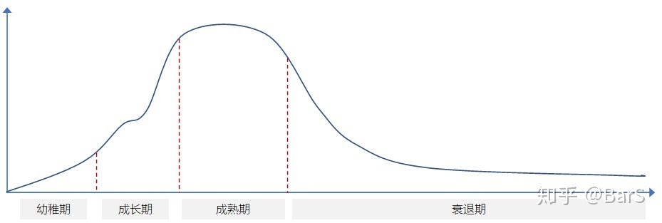
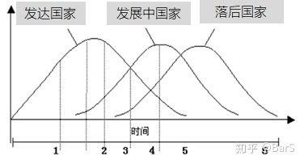
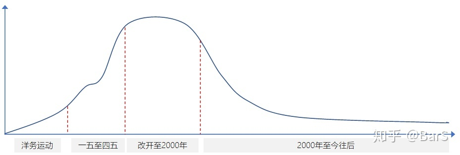

机械行业的待遇问题
作者：BarS - 知乎
这是一篇长文，尝试从宏观到微观来聊一下机械行业的问题，应该可以解答机械话题下一些让行业老人抱怨，行业新人疑惑，在读学生困顿的热点问题。
一、行业生命周期论
在讲机械行业具体问题之前，我们有必要先了解一个概念。任何行业都是有发展规律的，叫做行业生命周期理论（Industry Life Cycle），它是指行业从出现到完全退出社会经济活动所经历的时间。行业的生命发展周期主要包括四个发展阶段：幼稚期，成长期，成熟期，衰退期。这个周期大概可以描绘成下面这个样子。如果是涉及国计民生的基础行业，那么，它的衰退期会非常绵长，死而不僵。

1、第一次工业革命
18世纪60年代，英国纺织手工业率先发起了技术变革，开创了以机器作业代替手工作业的时代，也就是第一次工业革命。伴随着第一次工业革命的进程，生产方式由手工变为了机器，组织方式由工厂代替了手工作坊，农耕阶级弱化，工业资产阶级壮大起来。
第一次工业革命的主要标志是蒸汽机的广泛使用。1765年纺织工人哈格里夫斯发明了“珍妮纺织机”，揭开了工业革命的序幕；1785年，瓦特制造了改良型蒸汽机，人类由此进入“蒸汽时代”，这也是第一次工业革命的标志性事件；1807年，美国人富尔顿制造了蒸汽动力汽船；1814年，英国人史蒂芬发明了蒸汽机车，开启了人类交通运输的新时代；1840年前后，英国的大机器生产基本上取代了传统的工厂手工业，工业革命基本完成，成为世界上第一个工业国家。
这一个时期，我们可以理解为机械行业的幼稚时期与成长期。
2、第二次工业革命
19世纪60年代，欧洲、美国、日本等完成资产阶级改革，刺激促进了经济的发展，开始第二次工业革命，人类开始进入“电气时代”。 伴随着第二次工业革命的进程，社会生产力得到了极大的发展，对人类社会的经济、政治、文化、军事，科技和生产力产生了深远影响。资本主义生产的社会化大大加强，垄断组织应运而生。第二次工业革命，促进了世界殖民体系的形成，使得资本主义世界体系的最终确立，世界逐渐成为一个整体。
第二次工业的主要标志是电力的发明和电器的广泛使用。1866年，德国人西门子（现在西门子公司的创始人）发明制造了发电机；1854年，德国人亨利.戈贝尔发明制造了有实际功能的电灯；还是西门子，分别于1879年、1881年、1882年发明制造了电力机车、有轨电车、无轨电车。
这一时期另一个重大的科技成就是内燃机的发明创新，19世纪70年代，发明了以煤气和汽油为燃料的内燃机，90年代柴油机创制成功。内燃机的发明有效解决了交通工具的动力问题。80年代德国人卡尔本茨等人成功地制造出由内燃机汽车，内燃汽车、远洋轮船、飞机等也得到了迅速发展。
这一个时期，是机械的黄金年代，可以说是机械行业开始进入成熟期。
3、第三次科技革命
20世纪40年代开始的第三次科技革命，使得科学技术大幅度提高，为世界文化的发展提供了雄厚的物质基础，并使得全球的文化联系越来越密切，现代化呈现出多元化的特点。同时，也加剧了世界各个国家的发展不平衡，各国的国际地位发生了新变化。
第三次科技革命以原子能、电子计算机、空间技术和生物工程的发明和应用为主要标志，涉及信息技术、新能源技术、新材料技术、生物技术、空间技术和海洋技术等诸多领域的一场信息控制技术革命。
第三次科技革命的重大发明有空间技术，苏联、美国相继发射了人造卫星，并将人类首次带入太空。原子能技术，美苏英法中等过相继研发试制出核武器并施射成功。电子计算机技术，从40年代后期的电子管计算机开始，科技迅速发展，基本上每隔5~8年左右，速度、体积、成本都进化10倍。
第三次科技革命的意义非常之重大，直接奠定了目前的人类社会格局。第三次科技革命推动了社会生产力的发展，实现了以往以提高劳动强度提高生产率的发展方式转变为更加依赖科技进步、劳动者素质提高，劳动方式优化改进的现代化科学方式。
第三次科技革命，促进了社会经济结构和社会生活结构的重大变化，第三次科技革命造成第一产业、第二产业在国民经济中比重下降，使得第三产业的比重上升。为了适应科技的发展，资本主义国家普遍加强国家对科学领域研究的支持，大大加强了对科学技术的扶持和资金投入。随着科技的不断进步，人类的衣、食、住、行、用等日常生活的各个方面也在发生了重大的变革。
第三次科技革命，可以说是机械行业由成熟鼎盛期转向衰退期的一个阶段。标志性事件我个人定义为1993年由米帝总统克林顿正式采纳宣布的“国家信息基础结构的行动计划”，简称“信息高速公路计划”。这一计划得到了全球各个国家跟进。
1992年，参议员、前任美国副总统阿尔.戈尔提出美国信息高速公路法案。1993年9月，美国政府宣布实施一项新的高科技计划――“国家信息基础设施（National Information Infrastructure，简称NII）“，计划用20年时间，耗资2000～4000亿美元，以建设美国国家信息基础结构(NII)，作为美国发展政策的重点和产业发展的基础。
建设国家信息基础结构(NII)，既有赖于全球信息技术的微电子、光电子、计算机、通信等相关领域的突破进展，也有赖于各国政府根据各国国情所作的决策。美国是在已具规模的有线电视网(家庭电视机通过率达98%)、电信网(电话普及率93%)、计算机网(联网率50%)的基础上提出的，构想以光纤干线为主、辅以微波和同轴电缆分配系统组建高速、宽带综合信息而使网络，最终过渡到光纤直接到户。由于网络具有双向传输能力，因而全网络运行的广播、电视、电话、传真、数据等信息都具备开发交互式业务的功能。
可以看出，这一时期，即然是机械行业的由盛转衰期，那也就是计算机行业的萌芽期与成长期。
二、我国机械行业发展周期论
上面划分的机械行业周期是站在全球视角，以全球科技发展时间线进行的行业周期区间划分。而我们都知道，每个国家都有自己特殊国情，发展历史不尽相同，发展进程有先有后。比如，第一次工业革命主要发生在英国，重要的发明与生产方式变革都发生在英国，而其他国家工业革命发展相对缓慢。在第二次工业革命开始时，有些主要资本主义国家如日本尚未完成第一次工业革命，对它们来说，两次工业革命是交叉进行的，它们既可以吸收第一次工业革命，又可以直接利用第二次工业革命的新技术。

而我国，大家都知道，完美的错过了第一、二次工业革命。那么，别人在搞工业革命的时候，咱们在干什么？
第一次工业革命，18世纪60年代开始至19世纪40年代。对应到我国历经了乾隆时期（1736年至1795年）、嘉庆时期（1796年至1820年）、道光时期（1820年至1850年）。这一段时期，大家耳熟能详的大概也就是红花遍地视死如归、大明湖畔的夏雨荷、铁齿铜牙纪晓岚、还有鸦片战争了吧。我们还是天朝上国。
第二次工业革命，19世纪60年代至二战前期（1939年）。对应到我国历经了咸丰时期（1850年至1861年）、同治时期（1862年至1875年）、光绪时期（1875年至1908年）、宣统时期（1908年至1912年）、中华民国（1912年至1949年）。这一段时期，大家耳熟能详的太平天国、八国联军、洋务运动、甲午海战、武昌起义，总之，中国很忙，忙着打仗、签条约、打仗、签条约。
好吧，虽然在打仗签条约，但赖好还是有个洋务运动，洋务运动初期，在中堂大人等洋务派的带领下，中国第一家机械制造局、第一家邮报局等新事物诞生。可以说，洋务运动算是机械工业在我国的幼稚期。
直至新中国成立，大陆被校长霍霍的一穷二白，伟人在国土上开始现代化的建设，当初定调的要搞全产业链至今让后代受益匪浅。建国后从1953年开始，我国以制定五年计划的方式开展全国各个行业的发展。可以说，一五到四五，都取得非常丰硕的成果。
刚建国时，我们是典型的农业大国，工业基础非常薄弱，产业体系很不完善，工业化水平非常之低。以净产值衡量，工农业结构中农业比重高达84.5%，工业占15.5%，其中重工业只占4.5%。经过1949-1952年间的恢复和发展，工业总产值由140亿元增加到349亿元，按可比价格的年均增长率达到34.8%。但即使如此，工业占GDP的比重仍然很低，1952年农业占国内生产总值的比重超过50%，工业比重仅为17.64%。这一时期可以看做是机械制造业在我国的成长期。
从四五到五五期间，大家都知道的十年动荡，将我国的高速发展按了暂停键。所幸在改革开放后，我国发展的高速列车又重新启动，并且由于政策的关系，发展更加迅猛。发展至1997年，中国制造业规模居美、日、德之后，列世界第四位；2001年超过德国，2007年超过日本，2010年超过美国成为世界第一制造大国。改革开放直至2000年前后的这一段时期可以看做是机械制造业在我国的成长期的后期、全部的成熟期区间。人生历程与这一行业发展进程吻合的从业者，可以说是吃尽了发展红利，现如今基本处于这个行业里的高位。同时，城市化的房地产红利，也让这一波从业者资产得到倍数化提升。
至2017年，中国制造业增加值35584.04亿美元，占世界的比重达到27.02%，是美国的1.64倍。按照联合国工业发展组织的数据，中国22个制造业大类行业的增加值均居世界前列，其中纺织、服装、皮革、基本金属等产业增加值占世界的比重超过30%，钢铁、铜、水泥、化肥、化纤、发电量、造船、汽车、计算机、笔记本电脑、打印机、电视机、空调、洗衣机等数百种主要制造业产品的产量居世界第一位。2017年，中国制成品出口额达到21251.24亿美元，占世界出口总额比重高达17.48%，比制成品第二出口大国的德国高7.09个百分点。其中，电子数据处理和办公设备、纺织、服装的出口额占世界比重分别高达33.86%、36.60%和33.60%。可以说，中国已经从新中国成立之初积贫积弱的农业国转变成一个拥有世界上最完整产业体系、最完善产业配套的制造业大国和世界最主要的加工制造业基地。这一时期至今，虽然工业数据上越来越亮眼，但是，不可否认的是机械制造业在我国已经转盛为衰，进入漫长的衰退期。
当一个行业不再具有巨大的发展空间，不能再承受更多的资源投入，不能再提供足够多的就业岗位，那么，就会有另一个新兴行业来取代它，如若不然，只能发生冲突，推倒重来。上面讲到过，在全球范围内，计算机行业的幼稚期、发展期与机械制造业的由盛转衰周期吻合，我国也不例外。机械制造业在2000年已经取得了非常大的成就，与此同时，第一波的互联网的创业潮也开始风起云涌。
1994年，中国引入互联网，国家邮电部正式向社会开放互联网接入业务，第一次互联网创业浪潮开始酝酿。随后，1995年网景公司（Netscape Communications Corporation）在美国的上市，引发众多创业者开始关注互联网创业。2000年以前，“门户”网站大批出现，成为第一次浪潮的标志性的服务形态。其中，中华网（1999年7月上市）、新浪（2000年4月上市）、网易（2000年6月上市）、搜狐（2000年7月上市）等一批门户网站通过提供丰富的资讯和应用，实现了快速发展，成为了中央级的新闻门户代表，同时他们的上市也推动了“中国概念股”这一概念的诞生。
不得不提是，在制造业发展的同时，我国抓住了第三次科技革命的关键节点，新中国成立时面临着美国等西方国家封锁制裁，1960年中苏交恶后的严峻外部环境，但是仍然集中力量进行了重工业和国防工业建设，特别是重点发展电子与核工业。1960年11月，中国第一枚导弹发射成功；1964年10月，第一颗原子弹爆炸成功；1967年6月，第一颗氢弹空爆试验成功；1970年4月，第一颗人造卫星发射成功。“两弹一星”的成功，打破了帝国主义的核垄断，使中国成为世界上少数几个拥有核武器与卫星的国家，不但提高了国际地位，而且增强了国防安全保障能力，为我国后续发展迎来了稳定的国际环境，也为中国制造业的发展奠定了必要的物质与人才基础。
可以说，第三次科技革命，我国完美的跟上了队伍，时至今日，我们在移动互联网能取得这么亮眼的成绩，全部要归功于第三次科技革命红利。
综上所述，我们重新梳理机械制造业在我国的发展周期划分如下图。可以看出在2000年以后，机械行业开始走上缓慢的下行区间，虽然彼时的从业者还可以得到不错的回报，但是若干年后，互联网、房地产行业的高回报，让资源不再进入制造业，制造业的利润率一降再降，从此成为蹉跎的劝退行业。

以上两节的讨论可以总结为一个小贴士：
TIP1：机械无论在世界范围、还是我国国情下，都确定是一个处于并将长期处于衰退期的行业，衰退期漫长，利润极低。个人的发展首先是受行业影响，然后才谈得上个人奋斗。上升期的行业为个人努力添双翅膀，衰退的行业则会将个人努力狠狠地打上一个折扣。
还记得那一批在电梯里做俯卧撑的奋斗者吗？这是行业的力量。然后，才是他们的个人眼光、个人努力，他们看到了电梯选择了进电梯，然后努力的做着俯卧撑，顺利成为了登顶者。
三、我国机械制造业的一些现实问题
1、技术全面，但水平偏低
相信无论是从业者还是行外人，大家都知道，我们现在的制造业水平的特点就是大而不强，全而不精。什么都有，什么都能造，但质量就差一些，有些甚至差很多。某些高精尖产品，还完全造不了。
这种现象是典型的历史欠账，是完美错过第一、二次工业革命的苦果。我们经常听到的一句沾沾自喜的话叫做“我们只用了几十年就走完了资本主义几百年的历程”。这句话，对，也不对。
对的是，从产业上、产品上，肉眼可见的，我们在短短几十年间完成了工业化。欧美日韩有的，我们看起来确实都有了。好比一张试卷，欧美百年前做完交卷了，我们照着人家卷子抄了抄，晚了个百十年，好歹也算交卷了。对比之下，非洲兄弟们还是白卷。
不对的是，人家是自己写作业，我们是抄作业。咱都读过书，写作业与抄作业的差别，不必多说。一句老话叫做“画虎画皮难画骨，知人知面不知心”，用在机械制造业上也非常之妙。在很多细分领域，由于我们少走那宝贵的百十年，我们只抄得到形，抄不得意。以我熟悉的汽车领域为例。
-
一个底盘的橡胶件，用上欧日的，它就是抗造，不开裂，耐久后性能下降少；用国产件，甚至可能都通不过我们的耐久考核，更不要提性能保持程度。橡胶件好不好做？不就是找几个配方师傅，逆向个尺寸开个模就开始造吗，咋就不如别人？德日瑞企业动则1-200年历史，研究这些玩意就跟爱迪生当初试灯泡一样穷举法一个个试错试出来的配方，岂是几十年照抄能得到真经的。
-
所有机械学科学生都深入学习过的轴承，机械设计里面是不是还教如何设计如何校核。很纯正的机械产品对不对，也不带电，就是小铁坨子组装。可很多场合它就只有德国舍弗勒跟瑞典斯凯孚能顶得上去。国产？能用不，能，好用不？不好用。
还有很多机械学子都耳熟能详的外资企业，ZF、BASF、BorgWarner、SIEMENS、B&K都是经历过两个工业革命发展起来的百年企业。工程技术领域的真经，很多时候，就是像化学材料学科那样，通过不断的试验尝试、试验设计，千百次试错试出来的宝贵经验。发达国家用了1~200年的时间尝试出来的真经，我们短时间是不可能全学了去的。实际上，在工程技术的研究领域，很多时候，也是先有试验尝试，通了，返回到理论找支撑，再总结、重塑理论。反映到学术成果中，因为有学术文章的书写范式，所以看起来，仿佛成了先灵光一现，提出了理论，再开展试验验证理论。
只有掌握了真经，工程上我们叫做Know How，才掌握定价权，才能够享受高溢价。这也就解释了，为什么，同样干机械制造业，国外的同行收成比国内好，除了金融货币上的剪刀差，还有一个重要原因就是他们掌握了Know How，他们掌握这个行业、这个产品从头到尾所有的真理，他们生产制造出来的产品高质量、高溢价。
所以，机械话题下经常看到有同行痛哭疾呼，为什么国家不提高机械从业者待遇，国家为什么不加大机械行业攻关投入。这件事情上，真怨不得国家，也怨不得咱们这些从业者。1~200年时间的技术迭代、踩坑试验，不是我们几十年可以解决的。
2、行业庞大臃肿
我们现在行业的问题，是低水平的企业、作坊太多了，高精尖企业太少了。低水平意味着红海竞争低级趣味，低回报、低工资，那一丁点利润通常都是靠压榨人力所得。
同时，建国办教育至今，机械作为传统的老学科，各个本科、大专、中专一直保持着大量的招生，再加上。随便翻看一个工科院校的学院设置，机械一般都会是几个大院之一，招生至少10个班起，不到10个班都不好意思说自己是大院。这个行业里的人，实在是太多，太多了！人多了，就轻贱，低级趣味红海竞争，薪资开多低，都有人愿意干。只要还招得到人，还有利润可以压榨，低水平企业就还可以继续存活，继续生产，继续压低薪资。
正是因为人太多了，在前面十来年，本来可以升级自动化生产线的企业，有些时候，老板愿意花钱升级产线，反而会被告知暂缓实施。为什么？保就业。这就是国情。为什么保就业，理由是显而易见的，这里不去深入讨论。
（另外一方面是要保持市场占有率以求生存。现在我们的企业的生态位，相当于自然中的食草动物，简单但收益低，而西方则是食肉动物。假如我们不想吃草而想吃肉，能不能和他们抢到肉吃呢？恐怕不是那么简单的。人家的产品质量更好价格更低，我们凭什么抢市场呢？升级需要投入成本，但收益却是不确定的，存在极大的风险。所以，产业升级是伴随着风险的，既包括企业生存的风险，也包括了社会就业的风险。）
反观一些新兴行业，人才的供给与行业需求还存在一定的缺口，或者说没有完全饱和，企业想发展的好，就要互相抢人，有了竞争，个体从业者才能够受益。
本节的讨论可以总结为一个小贴士：
TIP2：不是个人不行，是行业现状真的不行，行业状况是历史大势等多方面因素决定的。错过的两次工业革命，导致了我们缺乏Know How的积累，进而无法产出高附加值的工业产品；大量低水平企业、海量人才供给是从业者蹉跎的重要原因。这个行业里的人太多了，分流一部分人力资源，对行业与个人都是益处。
四、关于智能制造
在说智能制造之前，还有一个大家的心结问题需要先聊一聊。既然说我们错过了2次工业革命，掉队了，导致现在很多领域都在低水平凑合发展，虽然短时间难以赶上，但是为什么不知耻而后勇，加大投入、加大研发，奋勇赶上呢？
这里其实有一个行业发展的窗口期概念。举个大家都好理解的小例子，在互联网行业的发展历程里，2000年前的时间点大家干网站，2005年时间点大家干电商，2010年的时间点大家干团购，2015年的时间点大家干P2P干短视频。个人创业者找风口也是，2010年前开网店，2015年前薅羊毛，2015年做公众号，2018年做短视频。每个时代有其自身的历史使命，在第三次科技革命的当口，第四次科技革命即将到来之际，有限的国力、资源前提下，肯定是 ALL IN 新技术新趋势。
不跟进新技术，而将重头资源砸回到上个世纪的技术区域，性价比是极低的。首先会错失附加值更高的新技术风口，而这个可能是会对落后生产力产生降维打击的；其次，在欧美日已经形成高壁垒的技术领域死磕，他们会用他们丰富的技术经验、金融手段玩儿死你。举个例子：我们某负责任的民营企业研发出了自主产权的ABS之时，博世直接将价格降到这家企业的出厂价。卒，前期研发成本全部白搭。
回到2020年的当口，在2015年提出的智能制造到底是什么？2012年美国提出的“先进制造业国家战略计划”，2013年德国提出的“工业4.0”与我国的“智能制造2025”其实都是差不多的一个概念。我个人简单将其看作是工业互联网的一部分。
按：我国将智能制造定义为“基于新一代信息技术，贯穿设计、生产、管理、服务等制造活动各个环节，具有信息深度自感知、智慧优化自决策、精准控制自执行等功能的先进制造过程、系统与模式的总称。”提出智能制造的目标是有效缩短产品研制周期。提高生产效率，提升产品质量，降低能耗。侧重点是以智能工厂为载体，关键制造环节智能化为核心，端到端数据流为基础，网络互联为支撑。
智能制造能给制造业带来新的生机吗？我的看法是，智能制造是互联网给制造业赋能，一定可以对如今的先进制造业起到提升作用。但是，未必对原来制造业内的从业者带来直接的红利。
再举个例子，大家一想便通。在智能制造之前，还有一些个概念曾经来过，大家都知道。那就是信息化建设，信息化建设后面还有数字化建设。企业信息化、政府信息化、企业数字化转型、数字政府诸如此类的概念，信息化、数字化建设肯定是大大的提高了行业的工作效率，有目共睹，我们现在能够无纸化办公，流程APP里一遍就过，都是信息化、数字化升级的好处。对行业，对法人主体，对从业者实实在在的产生了积极作用。
但是，大家最关心的是，对原本就在这个行业，这个公司的从业者，有实际的红利吗？好像并没有看到。但是，这样一笔信息化、数字化建设的投入，流向了哪儿？传统行业的公司并不具备自我升级的能力，那么只能依托外部专业的实施主体。所谓的外部实施主体是谁？还不是原本那些IT/互联网公司？除了外部的专业实施公司，传统企业内部还需要有专业的对接团队，这样就催生出了一个部门，叫做 IT部/信息数字化部/大数据部/IT与信息化部，名字五花八门，但都是它。这个多出来的部门，也还是要面向原来从事 IT、互联网、数据行业的从业者招聘，为了能招来人，还要对标 IT、互联网、数据行业的薪资。
在信息化产品、数字化产品与原公司业务对接时，还需要有人来梳理流程，建立关联，这些人被称为业务专家，也可以叫咨询顾问，这些人原本从哪儿来？一部分业务专家可以是传统行业里转出来，他们熟悉原来行业的流程；但咨询顾问一般还都是原本从事IT咨询行业的从业者。
所以，在我看来，智能制造，与之前的信息化、数字化建设并没有本质区别。把上面的几段话中的"信息化"、"数字化"换成"智能制造"，好像仍然成立。所以，智能制造，这是又一次的蓝海，为IT/互联网/咨询行业的从业者发掘的蓝海，它能提升制造业，为传统行业带来好处，而并不能为原本这些行业里的从业者带来直接的利益。
本节的讨论可以总结为一个小贴士：
TIP3：智能制造可以为传统制造业赋能，提高效率，提升竞争力；但是，智能制造的实施方仍然是原本IT/互联网/咨询行业的从业者，他们才是智能制造建设红利的直接关联方，原本传统行业里的传统岗位从业者们并不能获得直接利益。
五、传统机械制造业职场人的发展
基于以上的论述，传统机械制造业的从业者，想要获得好一点的劳动回报，该如何进行职场选择。其实，我的建议是普适性的，不止适用机械这一个行业。
要想高回报，就要让自己接触、拥有足够多的资源，个别精英可以发展到自己就是一种资源。我们再选择行业的时候，2000年以前我们选择进入机械行业能有还可以的回报，那是因为，在那个时期，社会资源是向制造业倾斜的。在2000年后进入IT/互联网行业，也是因为，在这之后，社会资源是向这些行业倾斜的。社会资源，是金钱，也是政策。（按：目前国家政策其实是反过来倾斜向高端制造业了，但社会资本还在观望）
在我们进入职场之前，想要获得高的劳动回报，首先应该选择一个远离衰退期的行业进行学习，学习这个专业的知识，这是最理想的。但是，大多数人未必能够在正确的时间节点，做出正确的选择，如果已经进入了传统行业的人们，该如何选择呢。
还是前面那句话，让自己接触资源。传统行业、传统岗位一样有资源位置，这里的资源是权/钱/人脉。对于一个传统行业从业者，我们抛开个人性格因素不谈，可以有以下几个范例。
-
学了传统制造业专业/从事了传统制造业岗位，千万不要因为觉得没救了，就不继续看机会。眼睛盯着那些红利行业、高薪企业，比如通信、智能硬件这些企业实际上也需要一些机械专业、机械岗位。努力提升自己跳槽去这些企业。其次，是盯着那些拥有真技术的外资企业，这些外企企业拥有定价权，产品高溢价，提供的薪资也非常漂亮，不失为一个好的选择。
-
一家中小型制造企业，产品大众化，这样的企业哪里是资源位，销售岗、财务岗，财务有一定限制而且聊起来会打球故暂且不谈。这样的同质化竞争激烈中小企业，就是比价格拼销售，在这样的企业做技术，想要得到尊重，是不可能的。但是做了销售，接手一部分公司原有客户资源，你自己再去跑一部分客户资源，你就占据了资源位，如果老板不供着你，换一家同业，马上加薪。越是技术含量不高，做同质化产品的中小企业，销售岗在公司的地位越重要。
-
一家大型制造企业，产品有技术含量，流程较为成熟，客户稳定，这样的企业哪里是资源位，项目岗、销售岗、采购岗。越是大企业，项目岗越重要，项目岗首先接触高层，产品做好了评奖、分红项目经理全是大头，晋升的关口，跟高层有眼缘的项目岗位肯定是比从未打过照面的技术岗有无可比拟的优势。销售岗、采购岗，自然不必多说了。
-
如果就是喜欢做技术，优先选择大平台，而不要看过鸡汤文选择小公司去锻炼自己的所谓“多面手”能力。现代工业，经过多少精英职场人士的打磨，每一个细分模块都有非常深厚的技术体系、流程方法，小企业永远领略不到正规军的打法，除非你是去小企业搏期权搏发展这就另当别论。去到大企业，做好本职工作的前提下，想尽一切办法接触技术标准、体系标准、流程文件，这些都是宝贵的技术资源，保存下来，这些才是以后跳槽的资本，人不值钱，人所掌握的技术标准、体系标准、流程标准才值钱。积累到一定阶段，跳槽到同业低一个档次的企业，带着这些大杀器，基本就是降维打击。
-
在一家企业，无论是不是传统企业，力争接触、进入一切跟公司新战略、新方向有关的项目，这些项目都是公司资源倾斜的，一般是公司层面决策认为具有发展前景的领域，对个人长期发展有利，同时，项目只要没做坏，都能获得实实在在的短期利益。
除了尽力靠近资源，让资源为自身赋能，还有没有别的路子？有。吃剪刀差，这里的剪刀差不是金融剪刀差，而是技术发展的代差，由前面的行业发展图可以看出，行业在发达国家、发展中国家、落后国家的发展时间是不一样的。说到这里，相信大家已经想到了，目光转向了西南方，那一片广袤的、纯净的、生机勃勃的处女地——非洲。对，去非洲吃剪刀差红利。就好像，黄发白皮绿眼的欧美人当年来到我们这里为我们带来技术一样。
本节的讨论可以总结为一个小贴士：
TIP4：一些高利润的非传统机械行业也有机械专业、机械岗位需求；择业选岗选择与资源接触多的，这样才能给自身赋能。还有一个突破点：去非洲。
六、关于选择工作与学习
这一节专门写给机械在读学生看的，在职同行业可以做个小参考权当提醒。
关于工作选择，就一个小点，选择一个公司，千万不要只盯着offer里的钱看，这里不是要你不看钱，看发展，我可不是老流氓。
这里要强调的是，很多公司会用障眼法来吸引优秀学生，offer里的数字特别漂亮，实际进了公司，有N多种方式叫你有苦难开口。这样的例子，我的行业里，我知道不少见。
当非唯一的选择摆在面前时，先看这个公司的核心产品符不符合新方向新趋势，再看核心产品的市场销量表现。这两个点抓住了，基本可以帮助你做好决策。offer给你的钱，相信不会有级的差别，那零星的差异，不要放在天平上去比较。
关于学习，有不少学生朋友私信过来，比较常见的是转专业、细分专业选择的问题，在这里统一梳理回答一下，恰巧我家领导从事互联网行业，头部公司供职，有职位，可以提供比较准确的建议。
-
想转互联网行业的，除了直接去学撸码赚取最高额的行业红利以外，对于撸码并不擅长的同学，还可以从数据分析、运营岗位入手，这两个岗位几乎是所有外专业转互联网的唯二岗位，被戏称为门槛最低的两个岗位。事实上，也确实是这样，虽然家里领导是科班的数据行业出身，但是从她的从业经历看，数据这个岗位里，确实更容易被外专业出身的切入进来。现在，网上有大量的培训课程可以看，深入学一学，包装一下，以数据、运营为切入点进入互联网，是非常可行的路径。
-
机械专业细分方向选择的，问这个问题的多是硕士研究生。有两个场景需要考虑，一个管理严格push的传统方向老板（按：老板指工科研究生导师或博士导师），和一个放养式老板。如果你坚定了毕业要转方向的，优先选择放养式老板，这样有充分的时间自学，加实习。互联网行业也好，高科技公司也好，传统行业也好，现在都流行搞实习生，廉价劳动力+正式工训练营。这样，毕业后进入目标企业的概率反而更大。如果是一个管理严格的传统老板，那你没得选了，老老实实做课题，外加偷学一点技能，毕业靠包装简历。
-
机械学科下面硕士的方向，CAE就算了，学生们会误以为是很学术很技术，其实在公司里就是个网格民工，再以后不定哪天就被二次开发给咔咔掉了；机械设计这样的传统方向，搞什么拓扑优化的，算了不提了，你们自己也懂；智能制造的，不要问我，我念书时候没这方向，我搞不明白，不误导人了，但是对于智能制造的看法，我全都写在上面了；机械电子、机械控制的，哎，矮个子里面挑高个，凑合齐勉强算个不错的去处，可学之。
以上全部为个人观点，无论对错，欢迎讨论。